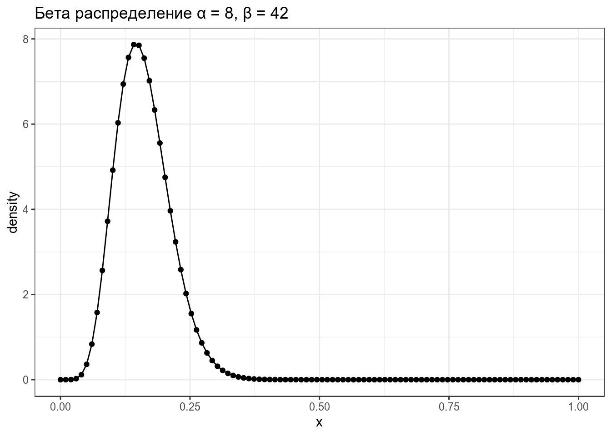
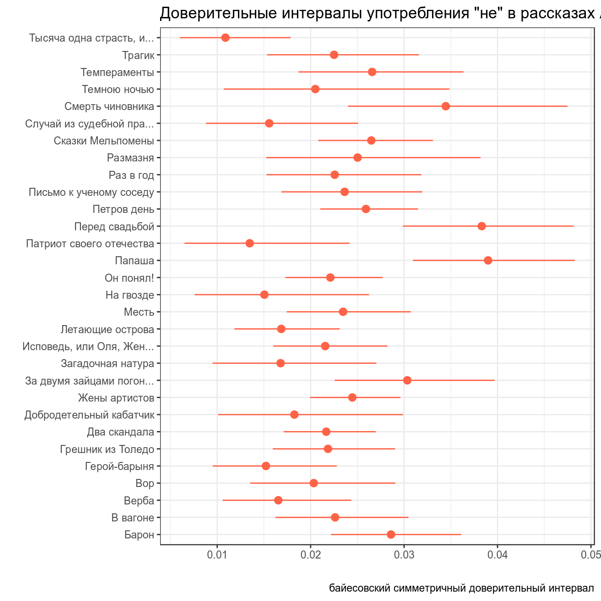
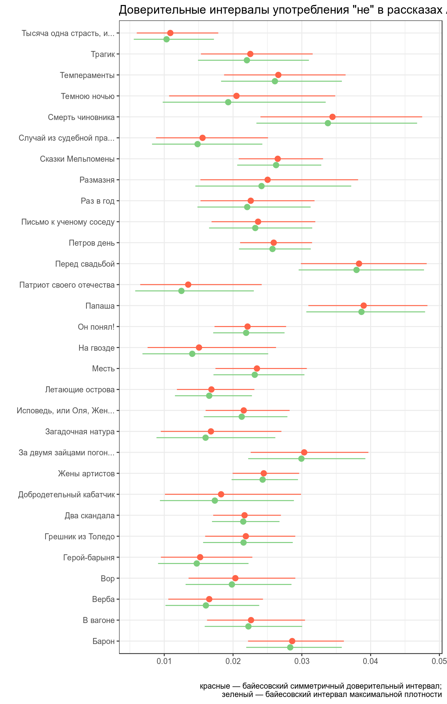
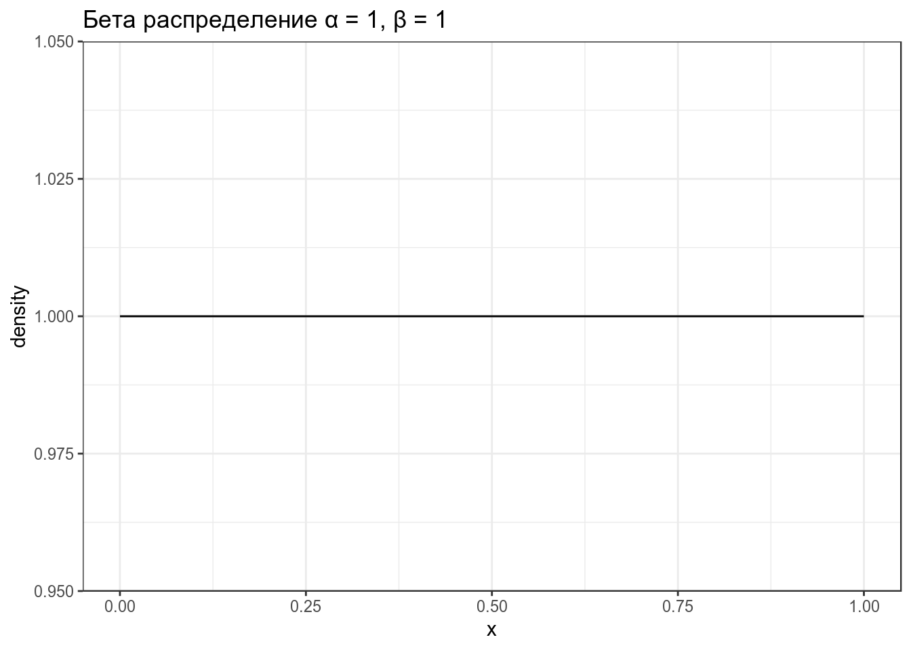
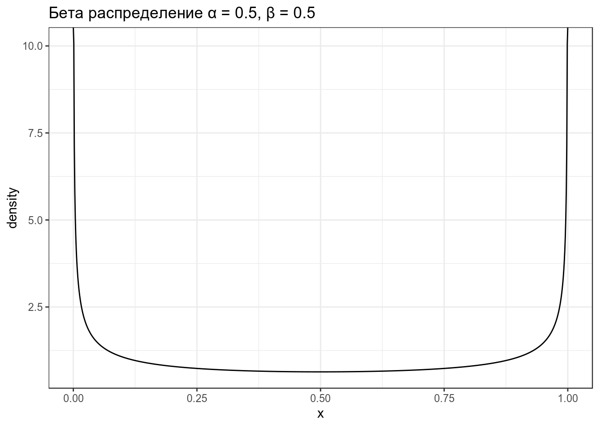
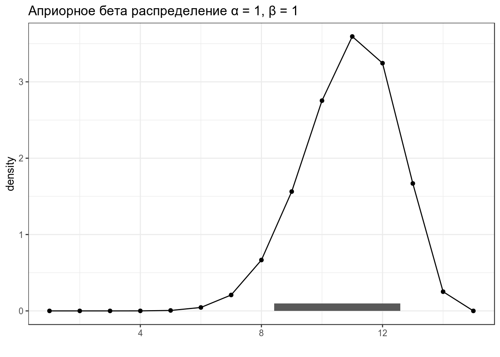

- Доверительные интервалы. Биномиальный тест
library(tidyverse)
theme_set(theme_bw())1. Байесовский вывод
1.1 Нотация
В байесовском подоходе статистический вывод описывается формулой Байеса
\[P(θ|Data) = \frac{P(Data|θ)\times P(θ)}{P(Data)}\]
- \(P(θ|Data)\) — апостериорная вероятность (posterior)
- \(P(Data|θ)\) — функция правдоподобия (likelihood)
- \(P(θ)\) — априорная вероятность (prior)
- \(P(Data)\) — нормализующий делитель
В литературе можно еще встретить такую запись:
\[P(θ|Data) \propto P(Data|θ)\times P(θ)\]
1.2 Бета-распределение
\[P(x; α, β) = \frac{x^{α-1}\times (1-x)^{β-1}}{B(α, β)}; 0 \leq x \leq 1; α, β > 0\]
Бета функция:
\[Β(α, β) = \frac{Γ(α)\times Γ(β)}{Γ(α+β)} = \frac{(α-1)!(β-1)!}{(α+β-1)!} \]
data_frame(x = seq(0, 1, length.out = 100),
density = dbeta(x = x, shape1 = 8, shape2 = 42)) %>%
ggplot(aes(x, density))+
geom_point()+
geom_line()+
labs(title = "Бета распределение α = 8, β = 42")
Можно поиграть с разными параметрами:
shiny::runGitHub("agricolamz/beta_distribution_shiny") \[\mu = \frac{\alpha}{\alpha+\beta}\]
\[\sigma^2 = \frac{\alpha\times\beta}{(\alpha+\beta)^2\times(\alpha+\beta+1)}\]
\[mode = \frac{\alpha-1}{\alpha+\beta-2}\]
1.3 Данные
- количество “не” в 311 рассказов А. Чехова
- число слов в каждом рассказе
chekhov <- read_csv("https://raw.githubusercontent.com/agricolamz/2019_FE_R_statistics/master/data/chekhov.csv")## Parsed with column specification:
## cols(
## titles = col_character(),
## word = col_character(),
## n = col_double(),
## n_words = col_double()
## )chekhov %>%
mutate(trunc_titles = str_trunc(titles, 25, side = "right"),
average = n/n_words) ->
chekhov2. Байесовский доверительный интервал
Какие вопросы к апостериорному распределению можно задать?
- попытка оценить параметр θ и какой-нибудь интервал, в котором он лежит.
- ответить на вопросы вроде
- какая вероятность что значение θ больше некоторого значения \(x\)?
- какая вероятность что значение θ лежит в интервале \([x; y]\)?
- и т. п.

2.1 Симметричный интервал (equal-tailed interval): медиана и квантили
Байесовский доверительный \(k\)-% интервал (по-английски credible interval) — это интервал \([\frac{k}{2}, 1-\frac{k}{2}]\) от апостериорного распределения. Давайте проапдейтим данные рассказов Чехова при помощи априорного распределения с параметрами (\(\alpha = 5.283022\), \(\beta = 231.6328\)), а дальше можем использовать функцию qbeta(), чтобы получить интервал, в котором находятся центральные \(k\)%.
chekhov %>%
slice(1:30) %>%
group_by(trunc_titles) %>%
mutate(beta_prior = n_words-n,
alpha_post = n + 5.283022,
beta_post = beta_prior + 231.6328,
median_post = qbeta(0.5, alpha_post, beta_post),
eq_t_int_min = qbeta(0.025, alpha_post, beta_post),
eq_t_int_max = qbeta(0.975, alpha_post, beta_post)) %>%
ggplot(aes(x= trunc_titles))+
geom_pointrange(aes(y = median_post, ymin = eq_t_int_min, ymax = eq_t_int_max), color = "tomato")+
coord_flip()+
labs(title = 'Доверительные интервалы употребления "не" в рассказах А. Чехова',
x = "", y = "",
caption = "байесовский симметричный доверительный интервал")
2.2 Интервал максимальной (апостериорной) плотности (Highest (posterior) density interval): мода и HDI
chekhov %>%
slice(1:30) %>%
group_by(trunc_titles) %>%
mutate(beta_prior = n_words-n,
alpha_post = n + 5.283022,
beta_post = beta_prior + 231.6328,
median_post = qbeta(.5, alpha_post, beta_post),
moda_post = (alpha_post-1)/(alpha_post+beta_post-2),
hdi_int_min = HDInterval::hdi(qbeta, shape1 = alpha_post, shape2 = beta_post, credMass = 0.95)[1],
hdi_int_max = HDInterval::hdi(qbeta, shape1 = alpha_post, shape2 = beta_post, credMass = 0.95)[2],
eq_t_int_min = qbeta(.025, alpha_post, beta_post),
eq_t_int_max = qbeta(.975, alpha_post, beta_post)) %>%
ggplot(aes(x= trunc_titles))+
geom_pointrange(aes(y = median_post, ymin = eq_t_int_min, ymax = eq_t_int_max), color = "tomato")+
geom_pointrange(aes(y = moda_post, ymin = hdi_int_min, ymax = hdi_int_max), color = "palegreen3", position = position_nudge(x = -0.3))+
coord_flip()+
labs(title = 'Доверительные интервалы употребления "не" в рассказах А. Чехова',
x = "", y = "",
caption = "красные — байесовский симметричный доверительный интервал;\n зеленый — байесовский интервал максимальной плотности")
В качестве аргумента в пользу HDI всегда приводят вот такое распределение:
3. Байесовский биномиальный тест
Представим старую задачу, когда у нас есть монетка с равновероятными, как мы полагаем, исходами, и мы пытаемся оценить насколько она соответствует нашим ожиданиям, если из 15 подкидываний 11 — решка.
Мы воспользуемся двумя возможными априорными распределениями:
- неинформативным априорным распределением
data_frame(x = seq(0, 1, length.out = 1000),
density = dbeta(x = x, shape1 = 1, shape2 = 1)) %>%
ggplot(aes(x, density))+
geom_line()+
labs(title = "Бета распределение α = 1, β = 1")
- распределением Джефри
data_frame(x = seq(0, 1, length.out = 1000),
density = dbeta(x = x, shape1 = 0.5, shape2 = 0.5)) %>%
ggplot(aes(x, density))+
geom_line()+
labs(title = "Бета распределение α = 0.5, β = 0.5")
Произведем байесовский апдейт неинформативного априорного распределения:
n_observation <- 15
a_post <- 1+11
b_post <- 1+4
data_frame(stats = c("mean", "sd", "80% credible interval min", "80% credible interval max"),
values = c(a_post/sum(a_post, b_post),
a_post*b_post/((a_post+b_post)^2*(a_post+b_post+1)),
qbeta(.1, shape1 = a_post, shape2 = b_post),
qbeta(.9, shape1 = a_post, shape2 = b_post)),
x_pred = values*n_observation)## # A tibble: 4 x 3
## stats values x_pred
## <chr> <dbl> <dbl>
## 1 mean 0.706 10.6
## 2 sd 0.0115 0.173
## 3 80% credible interval min 0.561 8.42
## 4 80% credible interval max 0.839 12.6data_frame(x = seq(0, 1, length.out = n_observation),
density = dbeta(x = x, shape1 = a_post, shape2 = b_post),
eq_t_int_min = qbeta(.1, shape1 = a_post, shape2 = b_post)*n_observation,
eq_t_int_max = qbeta(.9, shape1 = a_post, shape2 = b_post)*n_observation) %>%
ggplot(aes(1:n_observation, density))+
geom_point()+
geom_line()+
geom_rect(aes(xmin = eq_t_int_min, xmax = eq_t_int_max, ymin = 0, ymax = 0.1))+
labs(title = "Априорное бета распределение α = 1, β = 1",
y = "density",
x = "")
## The relative frequency of success is more than 0.5 by a probability of ...
pbeta(0.5, shape1 = a_post, shape2 = b_post)## [1] 0.03840637## and less than 0.5 by a probability of ...
1 - pbeta(0.5, shape1 = a_post, shape2 = b_post)## [1] 0.9615936Теперь давайте произведем байесовский апдейт распределения Джефри.